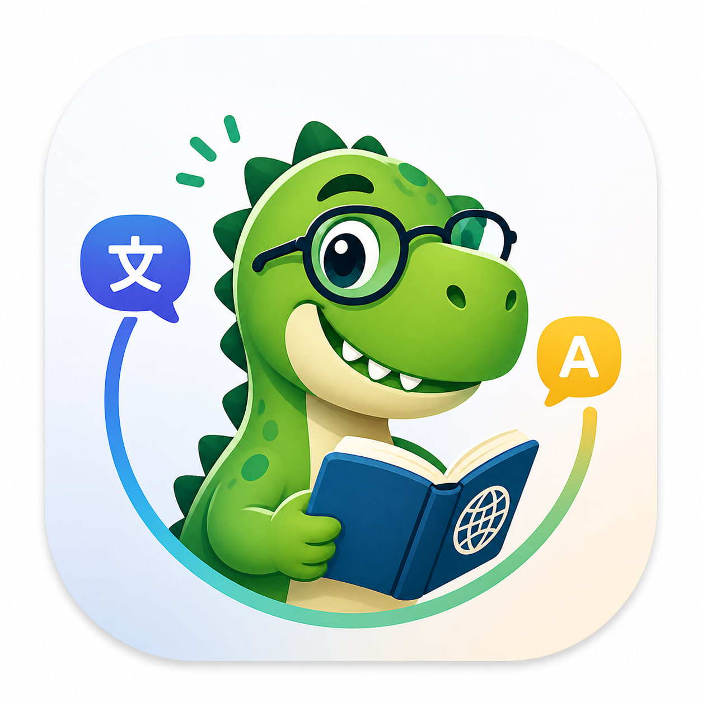
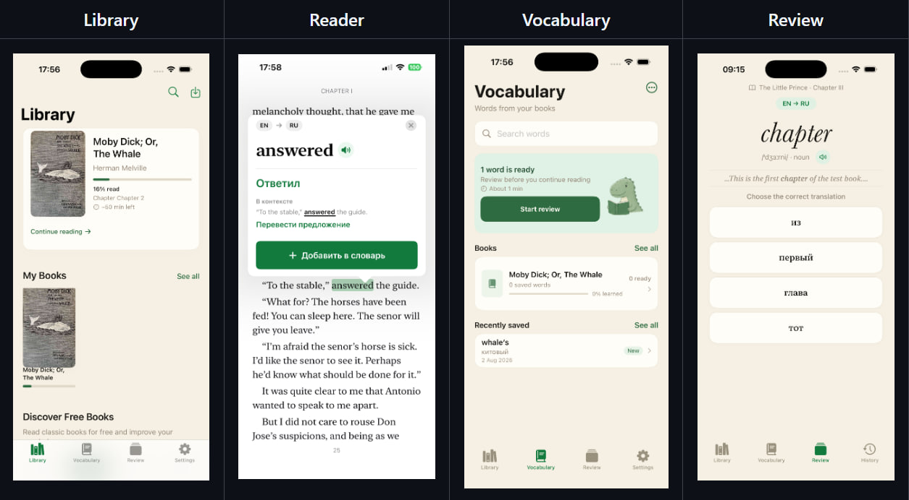

Егор Горских · iOS разработчик
iOS-разработчик с 5+ годами коммерческого опыта в продуктовой разработке. Сейчас работаю в команде дизайн-системы Туту: разрабатываю переиспользуемые SwiftUI-компоненты, проектирую их публичные API и участвую в развитии инфраструктуры дизайн-токенов.
До этого четыре года развивал ERP- и POS-приложения МойСклад и кроссплатформенные KMP-библиотеки для iOS, Android и Desktop. Работал со сложной бизнес-логикой и интеграциями: платежами и эквайрингом, фискализацией, маркировкой «Честный Знак» / ТС ПИоТ, кассовым оборудованием, realtime-данными, локальным хранением и CI/CD.
Обо мне
Основной фокус — нативная iOS-разработка на Swift, SwiftUI и UIKit. Мне интересны задачи, где нужно не просто сверстать экран, а спроектировать API, разобраться в бизнес-логике, данных и интеграциях и довести решение до рабочего продукта.
Работал с MVVM, Coordinator, Clean Architecture и Redux/ReSwift, RxSwift, Combine и Swift Concurrency. В проектах использовал Core Data и Realm, SPM и CocoaPods, Tuist и XcodeGen, Fastlane и GitLab CI. Пишу unit-, snapshot- и UI-тесты.
Помимо основной работы развиваю собственное iOS-приложение Smart-Trex — это мой полигон для архитектуры, SwiftUI, WKWebView, EPUB, persistence, backend API и продуктовых решений.
Коммерческий опыт
Туту · iOS-разработчик
Июнь 2026 — настоящее время
- Разрабатываю переиспользуемые SwiftUI-компоненты корпоративной дизайн-системы в крупной модульной кодовой базе.
- Проектирую публичные API компонентов, модели состояния и стилевые конфигурации для продуктовых команд.
- Участвую в архитектурных решениях, code review и синхронизации поведения компонентов между iOS, Android и Web.
- Работаю с пайплайном дизайн-токенов из Figma и покрываю компоненты snapshot- и unit-тестами.
МойСклад · iOS-разработчик
Май 2022 — Апрель 2026
- Развивал POS-приложение для розницы и основное мобильное ERP-приложение.
- Реализовывал оплаты, возвраты, бонусы, QR- и смешанную оплату, фискальные сценарии и маркировку.
- Интегрировал кассовое и платёжное оборудование, «Честный Знак» / ТС ПИоТ и сложные offline-сценарии.
- Разрабатывал KMP-библиотеки для интеграции платёжных терминалов и парсинга маркировочных кодов на iOS / Android / Desktop.
- Участвовал в развитии инфраструктуры: Tuist, XcodeGen, Fastlane, GitLab CI, test plans и Allure.
xCritical Software · iOS-разработчик
Август 2021 — Апрель 2022
- Работал над iOS-приложением для крипто-трейдинга на UIKit и RxSwift.
- Разработал REST-сетевой слой и ключевые пользовательские сценарии, включая открытие ордера и экран баланса.
- Работал с WebSocket, realtime-обновлениями торговых данных, PnL и push-уведомлениями.

Pet-project
Smart-Trex — читалка для изучения языков через книги
Я разрабатываю Smart-Trex — iOS-приложение для чтения книг на иностранных языках. Самостоятельно проектирую архитектуру и весь продуктовый цикл: EPUB reader с пагинацией и навигацией, перевод слов и предложений, словарь и систему повторения, persistence, backend API и инфраструктуру.
Идея приложения — не заменить обычный переводчик, а помочь читать на иностранном языке без постоянного переключения контекста: нажал на слово, получил перевод, сохранил в словарь и позже повторил.

Smart-Trex
Smart-Trex — это не просто переводчик. Это приложение для тех, кто хочет читать книги на иностранном языке и постепенно расширять словарный запас.
- Reader: EPUB, пагинация, оглавление, внутренние ссылки и восстановление позиции чтения
- Перевод: перевод слов и предложений прямо в контексте книги
- Vocabulary: личный словарь, привязка слов к книгам и контекстам
- Review: система повторения и отслеживание прогресса изучения слов
Главный сценарий продукта: читать → переводить → сохранять → повторять.
Технологии проекта
- UI: SwiftUI — декларативные экраны, адаптивная вёрстка, переиспользуемые компоненты
- Reader: WKWebView — отображение EPUB-глав и обработка нажатия на слова
- Архитектура: MVVM + Use Cases + Repository layer
- Асинхронность: async/await — сеть, парсинг и перевод
- Хранение: Core Data — книги, прогресс чтения, словарь, история и кэш переводов
- Backend: Node.js + Express — API-прокси, rate limit, валидация запросов
- Перевод: self-hosted LibreTranslate за Nginx и HTTPS
- Инфраструктура: Docker Compose, Nginx, Let’s Encrypt, Cloudflare DNS
- Тесты: unit-тесты для парсинга, репозиториев, use case-ов и view model-ей
Зачем я его делаю
Smart-Trex для меня — не учебный экран и не набор демо-фич, а полноценный продукт, где я могу самостоятельно принимать архитектурные и продуктовые решения. На нём я глубже работаю с SwiftUI, WKWebView, асинхронностью, persistence, тестированием, backend и инфраструктурой — теми областями, которые обычно распределены между несколькими командами.